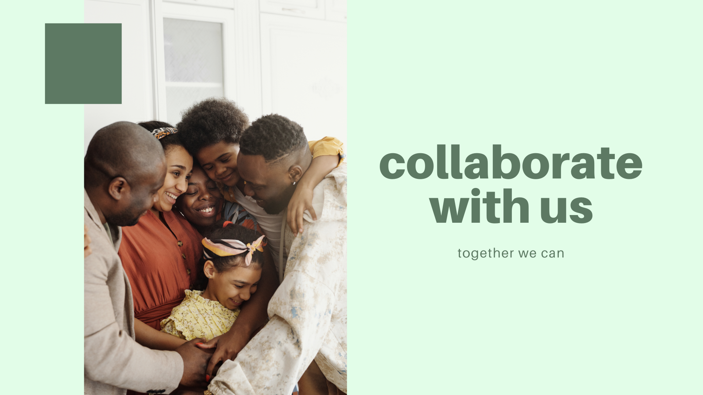

Collaborate with us

Collaborate with us
As the Ministry of Women, Family and Community Development rolls out its plan to move from institutional care to family and community based care for
children it is imperative that all stakeholders including other government ministries,
the corporate sector and civil society be focused on the common objective and work together to lay a strong foundation.
It is a big task.
We need to to collaborate to end the practice of children being raised in institutions;
to transition to a family and community based care system that will end the disturbing trend in babies being abandoned.
OrphanCare’s collaborative approach
Focuses on three areas:
Developing family support services
Building capacity and capability through skills training
Improving child protection and safety through education
Our goal is to:
- Lay the groundwork and insist on good practices as institutionalised children begin their transition to a home environment
- prepare children and families for life together as a family
- Strengthen partnerships and collaborations that make reintegration sustainable
Developing family support services collaboratively
OrphanCare is working with the Ministry of Women, Family and Community Development and select registered private child care institutions on reintegrating children back into families.
Findings from OrphanCare’s pilot reintegration project presented at our national conference in November 2016 highlighted several areas that need immediate attention.
Inadequate housing, insufficient financial aid for single mothers, lack of facilities and services such as free day care and medical support especially for children with disabilities are challenging issues.
Why we need to collaborate
Reintegration is a drawn out process that takes 6 months to 2 years and sometimes even longer. Reuniting an orphan from an institution with his or her family is fraught with problems. Poverty is a significant factor; families struggle with basic needs as they live hand to mouth.
During the transition period children and their families need to quickly establish some level of socio-economic independence for the emotional security that makes re-bonding work.
We recognise this.Our reintegration programmes target economics and psychology. If poverty caused the separation that situation must be remedied.
How to collaborate
We invite interested, willing and able parties to work with us to facilitate this crucial transition period.
Building capacity in family and community based services and developing programmes requires a multifaceted approach.
Building the infrastructure and network to sustain these children and their families requires input from a variety of sources.
Design by: Eunike, Priscilla & Nur Syahira.
Disclamimer: This website is not an official website of Orphancare Foundation.
|